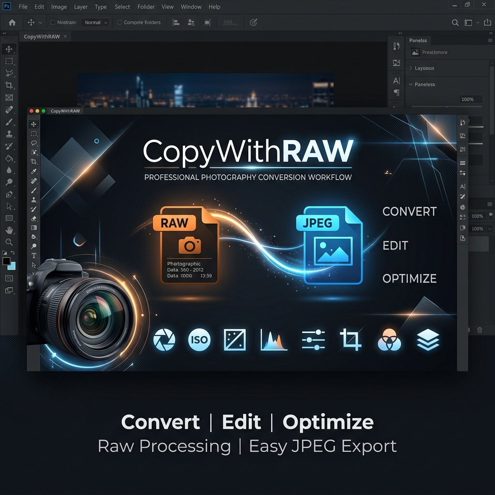
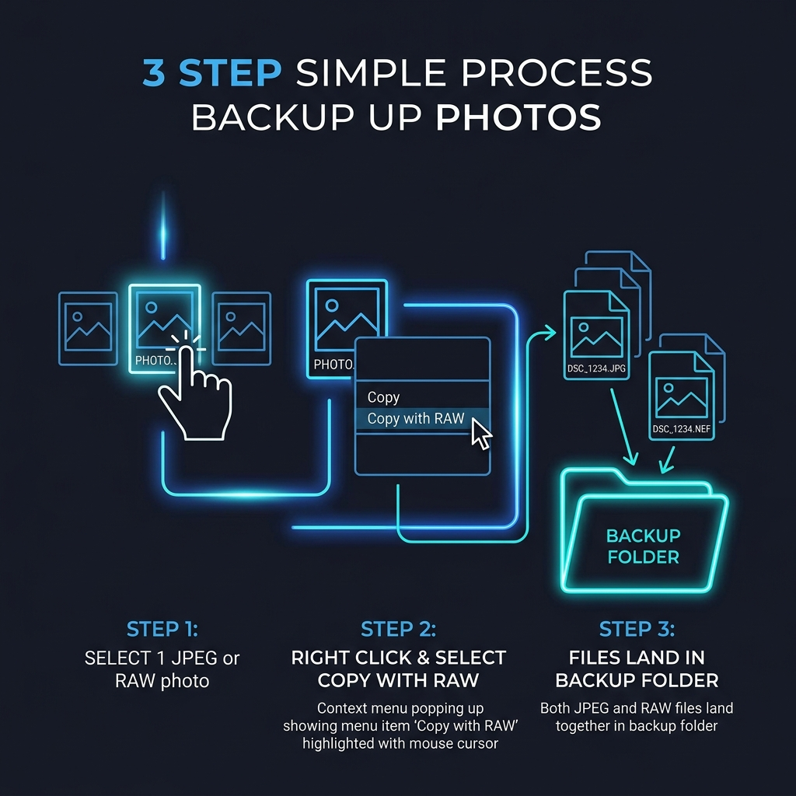

When backing up photo folders, select just one file. CopyWithRAW automatically finds and copies both the JPEG and RAW photo files together.

You don't need to manually search for matching .NEF, .CR3, or .ARW files in your photo folder. Select the JPEG (or the RAW), right-click Copy with RAW, and the rest get copied over automatically — including .xmp edit files!

The Portable Scripts package contains the raw batch files (Install.bat, CopyWithRAW.ps1, RunHidden.vbs, and FastStone helpers) for users who want to run the scripts directly without an installer wizard.
CopyWithRAW-Windows-Portable-Scripts.zip to a permanent folder on your computer (e.g. C:\CopyWithRAW\).